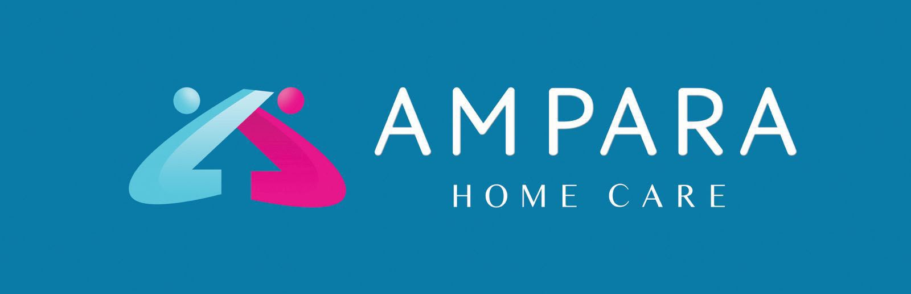
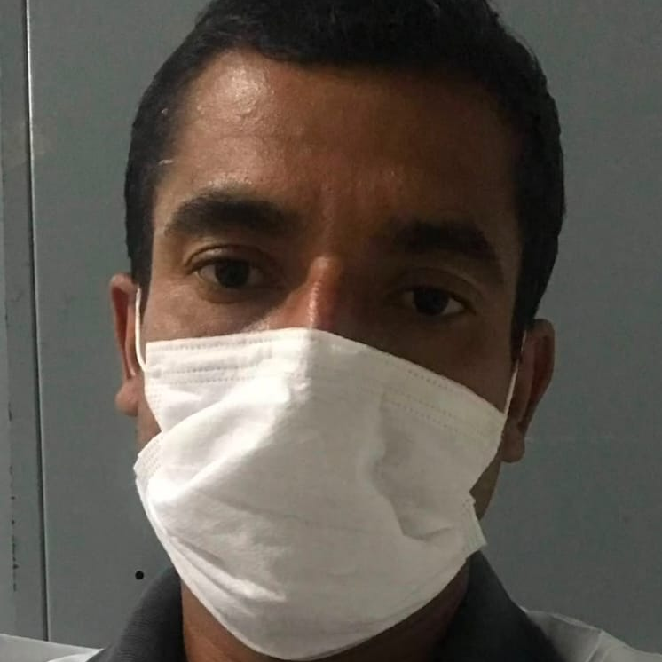

Cuidadores certificados na escala que a sua família precisa. Atendemos Tupaciguara e região.
Conversar agora no WhatsAppEm todos os serviços, um médico ou enfermeiro da coordenação acompanha o caso e dá suporte ao cuidador sempre que for preciso.
Conte o que precisa: cuidado no dia a dia, acompanhamento em consulta ou internação, ou um procedimento avulso.
Cuidado contínuo começa com visita de médico ou enfermeiro em casa. Serviços pontuais são agendados direto, sem burocracia.
Um profissional certificado pela Ampara realiza o serviço — sempre com um médico ou enfermeiro a par do caso, dando suporte.
A Ampara não é uma agência de indicação: quem coordena, visita e responde pelo cuidado são um médico e dois enfermeiros.
Responsável pela avaliação clínica inicial e pelo acompanhamento médico do plano de cuidado.
Enfermeira reconhecida em Tupaciguara pela competência e dedicação no cuidado com pacientes.

Enfermeiro com experiência à frente de hotel geriátrico — conhece a rotina do cuidado ao idoso por dentro.
A avaliação inicial é feita em casa por um médico ou enfermeiro da coordenação. Avaliamos o estado de saúde do paciente, as necessidades do dia a dia e o ambiente, e apresentamos o plano de cuidado antes de qualquer contratação.
Todos os cuidadores são selecionados, treinados e certificados pela nossa coordenação — um médico e dois enfermeiros — e seguem sendo supervisionados durante todo o atendimento.
Atendemos Tupaciguara/MG e região. Se você está em uma cidade próxima, chame no WhatsApp e verificamos a disponibilidade.
Para o cuidado contínuo, o valor depende da necessidade de cada paciente (horas de cuidado, complexidade, escala) — após a visita de avaliação, apresentamos uma proposta personalizada, sem compromisso. Serviços pontuais têm valores informados na hora, pelo WhatsApp.
Não. Atendemos também pacientes em recuperação pós-cirúrgica, pessoas com mobilidade reduzida e outras situações que exijam cuidado em casa.
Sem compromisso: você conta a situação, e agendamos a visita de avaliação ou o atendimento que você precisar. Atendemos Tupaciguara e região.
Chamar no WhatsApp